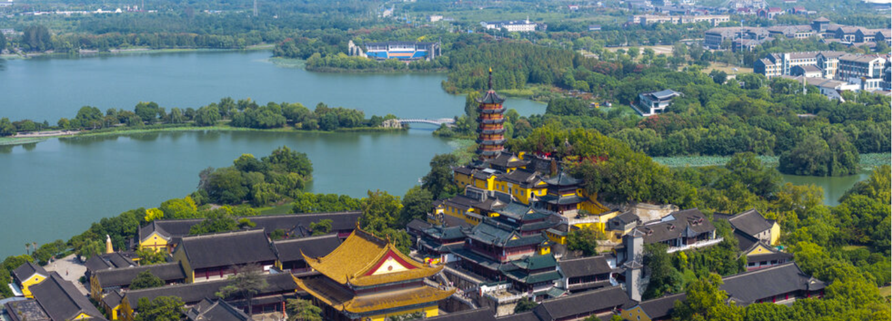

行程概览

镇江经典景点分布图
7:30
抵达镇江火车站，享用早餐
8:00-10:00
游览金山寺
10:30-12:00
游览北固山
12:00-13:30
午餐时间
13:30-15:00
西津渡古街
15:00-16:00
镇江博物馆
16:00-17:30
焦山风景区
17:30-18:00
醋文化博物馆
18:00-19:00
晚餐
19:00-19:30
返回火车站
上午行程
早餐（7:30-8:00）
用餐时间：约30分钟
推荐美食：
- 锅盖面：镇江最具特色的早餐，筋道爽滑（约10-15元）
- 镇江馄饨：皮薄馅大，鲜美可口（约8-12元）
- 蟹壳黄：传统糕点，外焦里嫩（约5-8元/个）
- 三怪汤：以姜末、醋、糖为主料，开胃提神（约5元）
推荐早餐店：
- 陶大面馆（火车站附近有分店）
- 达达面馆
- 张二面馆
- 老字号早点铺
金山寺（8:00-10:00）
游玩时间：约2小时
交通：
火车站乘坐216路/115路/17路到金山公园站（约20分钟）
门票：
约40-50元（可使用转转卡）
游览重点：
- 大雄宝殿：20分钟
- 多宝塔：20分钟
- 法海洞：15分钟
- 白龙洞：15分钟
- 江天一览景观：30分钟
- 其他景点和拍照：20分钟
小贴士：
金山寺与白蛇传故事关系密切，是镇江最著名的佛教寺院之一。从山顶可以俯瞰长江，景色壮观。
北固山（10:30-12:00）
游玩时间：约1.5小时
交通：
从金山寺乘坐49路或8路前往北固山（约30分钟）
门票：
约30-40元（可使用转转卡）
游览重点：
- 北固楼：30分钟
- 多景楼：20分钟
- 怀古亭：15分钟
- 俯瞰长江景观：25分钟
小贴士：
北固山是三国时期孙权"居高临下，尽览江山"的地方，历史文化底蕴深厚，是观赏长江景色的绝佳位置。
下午行程
西津渡古街（13:30-15:00）
游玩时间：约1.5小时

交通：
从北固山乘坐公交前往西津渡（约25分钟）
门票：
古街免费开放，部分景点单独收费
游览重点：
- 西津渡历史文化博物馆：30分钟
- 英国领事馆旧址：20分钟
- 西津渡古码头：15分钟
- 昭关石塔：15分钟
- 古街漫步与特产购买：30分钟
小贴士：
西津渡是镇江保存最完好的历史街区，千年古渡展现了镇江作为水陆交通枢纽的历史地位。
镇江博物馆（15:00-16:00）
游玩时间：约1小时
交通：
从西津渡步行约10分钟
门票：
免费参观
游览重点：
- 镇江三怪文化展：20分钟
- 三国文化展：20分钟
- 其他展区：20分钟
小贴士：
镇江博物馆馆藏丰富，是了解镇江历史文化的重要场所，周一闭馆，请提前确认开放时间。
焦山风景区（16:00-17:30）
游玩时间：约1.5小时
交通：
从博物馆乘坐104路到焦山风景区（约20分钟）
门票：
约40元（可使用转转卡）
游览重点：
- 定慧寺：30分钟
- 千佛塔：20分钟
- 江南第一藏经楼：20分钟
- 景观欣赏和拍照：20分钟
小贴士：
焦山有"天下第一江山"之称，是镇江三山之一，融佛教文化与自然景观为一体。
醋文化博物馆（17:30-18:00）
游玩时间：约30分钟
交通：
从焦山返回市区（约15分钟）
门票：
免费或象征性收费
游览重点：
- 了解镇江香醋酿造工艺和历史：15分钟
- 购买正宗恒顺香醋和其他特产：15分钟
小贴士：
镇江香醋是"镇江三怪"之一，参观醋文化博物馆可全面了解香醋产业的发展历程。
美食推荐

锅盖面
镇江名小吃，清汤面上加一个特制的锅盖，风味独特，筋道爽滑。
价格：10-20元/碗

镇江肴肉
"镇江三怪"之一，肉质软烂，色泽红亮，香而不腻，冷盘佳品。
价格：30-50元/份

镇江香醋
"镇江三怪"之一，色泽乌黑，香气浓郁，酸味纯正。
价格：20-50元/瓶
干烧岔饼
镇江传统名菜，将面饼和猪肉片交错叠放，经红烧而成，咸鲜适口。
价格：40-60元/份

蟹壳黄
镇江传统糕点，色如蟹壳，外酥里嫩，香甜可口。
价格：5-8元/个
实用信息
转转卡使用
- 金山寺（门票：约40-50元）
- 北固山（门票：约30-40元）
- 焦山（门票：约40元）
- 部分博物馆和展览馆
- 购买地点：火车站旅游咨询中心、各大景点售票处
交通信息
- 镇江市内公交线路便捷，票价约2元/次
- 景点之间距离适中，部分可步行到达
- 高峰期建议预留额外10-15分钟交通时间
- 手机导航或公交查询APP可方便出行
购物建议
- 镇江香醋：恒顺品牌最为正宗（小瓶装20-50元）
- 醋制品：醋蛋、醋泡姜等特色产品
- 肴肉：真空包装可带回（30-50元/份）
- 茶食：润州糕点、茶干等（10-30元/盒）
季节建议
- 春秋季最佳：气候宜人，景色优美
- 夏季注意防晒、补水，景区游客较多
- 冬季游览人少，但部分景点可能受天气影响
- 雨天带伞，准备舒适防滑的鞋子